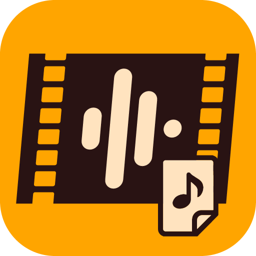

電脳空間の物理ガジェット配布ページ
[ TOOLS: 3 ]
高画質画像ファイルを2MB以下に一括変換するデスクトップアプリケーション

動画ファイルからAAC音声（.m4a）を抽出するデスクトップアプリケーション
WAV・MP3・M4A等の音声ファイルをVOX形式（Dialogic ADPCM / G.711 uLaw・aLaw）に変換するデスクトップアプリケーション
このサイトでは Google Analytics を使ってアクセス状況を計測しています。許可いただける場合は「同意する」を押してください。